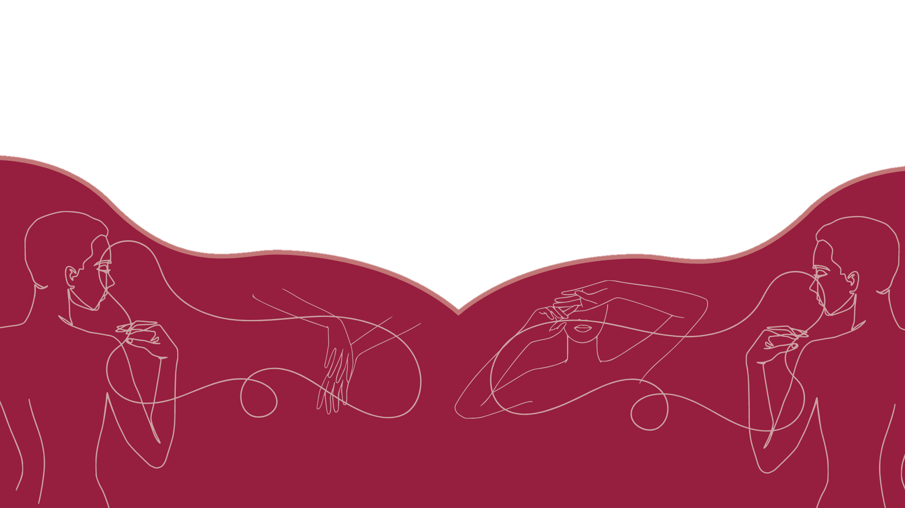
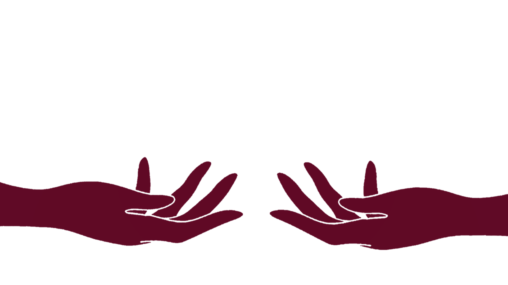
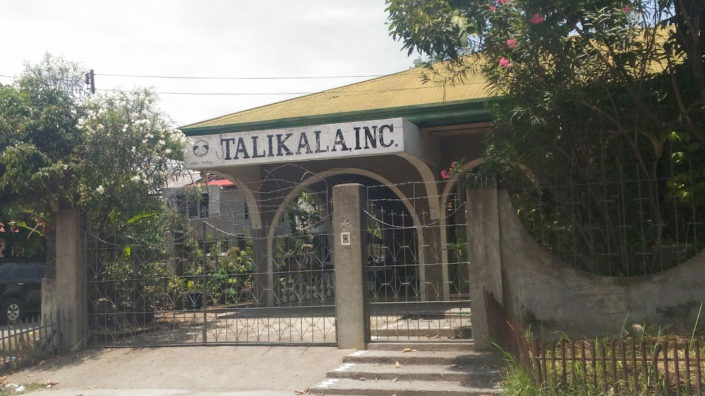

Talikala Inc.
BREAKING THE CHAINS FOR FREEDOM



The Institution
Talikala was formed to offer support to the women and children who
were
prostitutes, sexually abused, and exploited. Talikala is committed to helping women who were
prostitutes gain their rights, reclaim their dignity, and identify their place in society. As
part
of their education services, they promote awareness of women's rights and issues. They also
offer
case management services to the women and girls who have been sexually abused, trafficked,
exploited, etc. The organization's main benefits include an improvement in the victim's quality
of
life, the empowerment of women, and the ability to spread awareness of this worldwide
problem.
In August 1987, Talikala, Inc. was founded and
established by
a group of three women, Cindy O’Donnel (lay missionary), Elizabeth O’Brien (social worker), and
Felicidad Prieto (former night club dancer), all of which who have unique backgrounds but are
tangled to one goal. They aim to provide comfort, shelter, protection, guidance and support for
the
women and children who were trafficked and prostituted and empower them to a new life. Ms.
Jeanette
Laurel-Ampog, the current executive director and institution head, advocates women rights and
protection as she stands as the voice of the victimized. Up till now, the Talikala still
strongly
advocates and continues to help these women in need and hopes to spread awareness to all the
exploited women and children out there that this organization exists to protect them.
Beneficiaries
In our society, many women experience violence, such as sex trade. The Talikala institution comes in at this point. The majority of the women admitted to the facility are prostitutes, who are bound by chains of exploitation and oppression. According to Talikala, women who engage in prostitution experience cruel, inhumane treatment, and as a result, their rights to respect themselves as well as others are infringed. Since they advocate for the rights of women and children and discuss issues like sexual assault and online exploitation, gender sensitivity, anti-prostitution, and building the capacity of leaders of community-based organizations, the individuals being admitted into the institution are therefore those who experience sex trafficking and exploitation.
Benefactors
BMZ, a ministry for economic cooperation and development that supports non-governmental organizations in the areas of emergency and transitional help, is the patron of Talikala, Inc. Endowments from the business sector suggest beneficiaries promote services and programs for the safety of women and children. As supporters of the institution's mission, money from private founders and sponsors totals 70,000 euros or 3,948,687 PHP in local currency. As a result of increased funding from the local government and sponsors from its donors, the project areas in villages around Davao City have developed steps to address the susceptibility of women and children to human trafficking for sexual exploitation.
General Information
 Address: #2 Sputnik Street corner, Panganiban Street, Dona Vicenta VIllage, 8000 Davao CityContact Person/s: Karina, Jeanette Ampog
Contact Number/s: Drop-in: 226-2543/ Office: 221-6728, 224-0048 (fax), 300-0048, (082) 287 4653, 287-4653
Offical Facebook Page: Talikala Facebook Page
G-mail Address: talikaladavao@gmail.com
About the Web Designer

Hannah Beatrice M. Jadulco, otherwise known as Hannie, is one of the five members of Group 2A, 9 - Xavier, specifically the project designer. She was born on April 13, 2008. She is gifted with skills in art which is one of the reasons why she is the creative pillar of the team. Other than drawing, her hobbies include gaming with friends and watching anime. Hannah is dedicated and loyal, so if you're friends with Hannah, you are very lucky to have her!